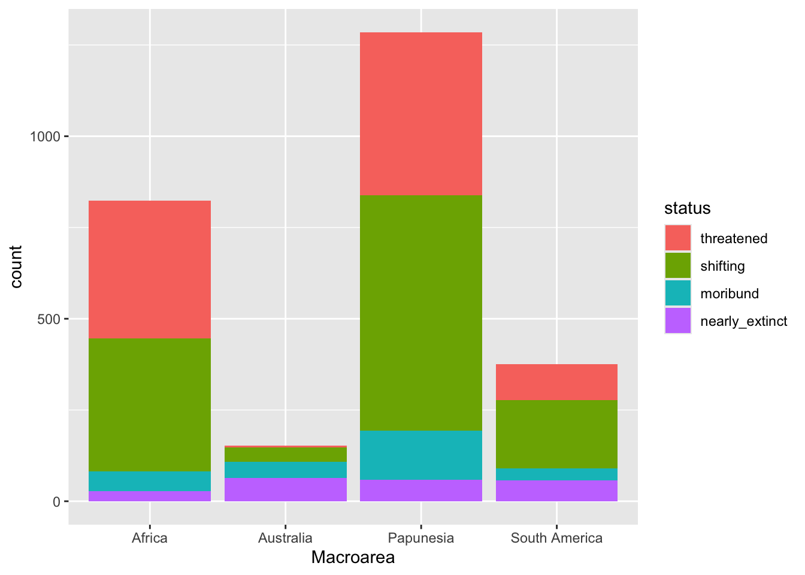
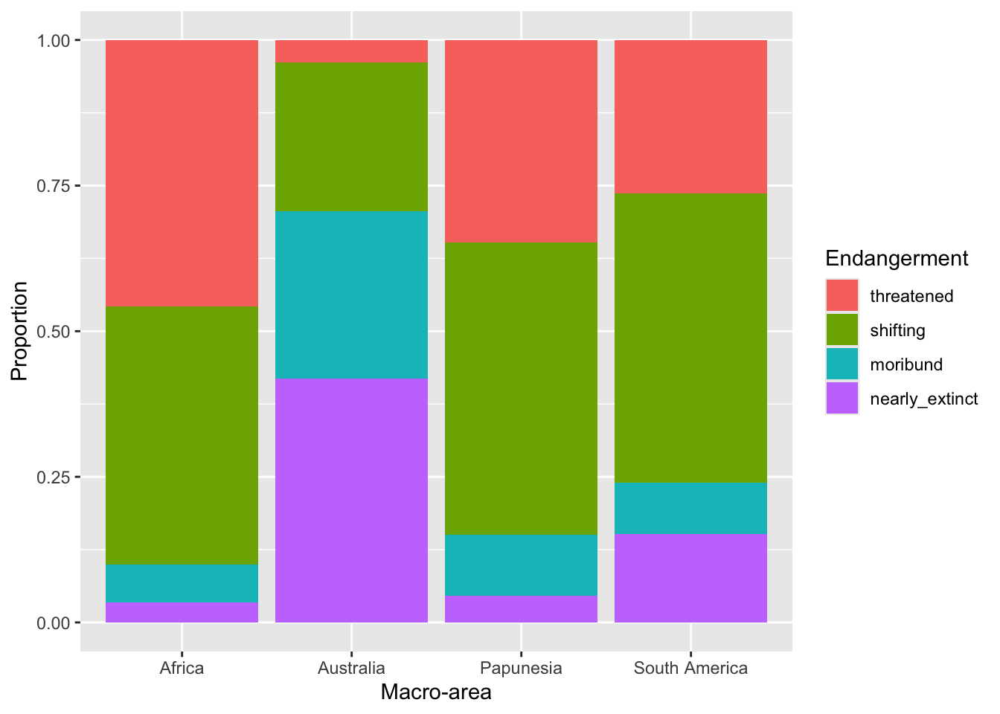

global_south |>
ggplot(aes(x = status)) +
...Bar charts
Learn how to plot bar charts with ggplot2
1 Bar charts
We will first create a plot with counts of the number of languages in global_south by their endangerment status and then a plot where we also split the counts by macro-area.
1.1 Number of languages of the Global South by status
To create a bar chart, you can use the geom_bar() geometry.
Go ahead and complete the following code to create a bar chart.
Note how we’re using |> to pipe the glot_status data frame into the ggplot() function. This works because ggplot()’s first argument is the data, and piping is a different way of providing the first argument to a function.
As mentioned above, the counting for the y-axis is done automatically. R looks in the status column and counts how many times each value in the column occurs in the data frame.
If you did things correctly, you should get the following plot.

The x-axis is now status and the y-axis corresponds to the number of languages by status (count). As mentioned above, count is calculated under the hood for you (you will learn how to count levels with count() later in the course).
You could write a description of the plot that goes like this:
The number of languages in the Global South by endangered status is shown as a bar chart in Figure 1. Among the languages that are endangered, the majority are threatened or shifting.
What if we want to show the number of languages by endangerment status within each of the macro-areas that make up the Global South? Easy! You can make a stacked bar chart. This requires we mutate the data first.
2 Stacked bar charts
A special type of bar charts are the so-called stacked bar charts.
To create a stacked bar chart, you just need to add a new aesthetic mapping to aes(): fill. The fill aesthetic lets you fill bars or areas with different colours depending on the values of a specified column.
Let’s make a plot on language endangerment by macro-area.
Complete the following code by specifying that fill should be based on status.
global_south |>
ggplot(aes(x = Macroarea, ...)) +
geom_bar()You should get the following.

A write-up example:
Figure 2 shows the number of languages by geographic macro-area, subdivided by endangerment status. Africa, Eurasia and Papunesia have substantially more languages than the other areas.
3 Filled stacked bar charts
In the plot above it is difficult to assess whether different macro-areas have different proportions of endangerment. This is because the overall number of languages per area differs between areas.
A solution to this is to plot proportions instead of raw counts.
You could calculate the proportions yourself, but there is a quicker way: using the position argument in geom_bar().
You can plot proportions instead of counts by setting position = "fill" inside geom_bar(), like so:
global_south |>
ggplot(aes(x = Macroarea, fill = status)) +
geom_bar(position = "fill")The plot now shows proportions of languages by endangerment status for each area separately.
Note that the y-axis label is still “count” but should be “proportion”. Use labs() to change the axes labels and the legend name.
global_south |>
ggplot(aes(x = Macroarea, fill = status)) +
geom_bar(position = "fill") +
labs(
...
)You should get this.

With this plot it is easier to see that different areas have different proportions of endangerment. In writing:
Figure 4 shows proportions of languages by endangerment status for each macro-area. Australia, South and North America have a substantially higher proportion of extinct languages than the other areas. These areas also have a higher proportion of near extinct languages. On the other hand, Africa has the greatest proportion of non-endangered languages followed by Papunesia and Eurasia, while North and South America are among the areas with the lower proportion, together with Australia which has the lowest.